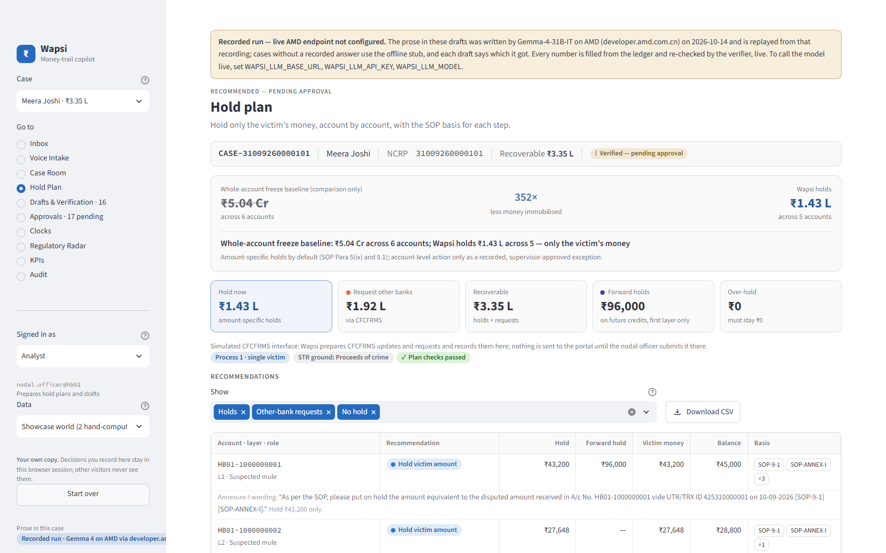
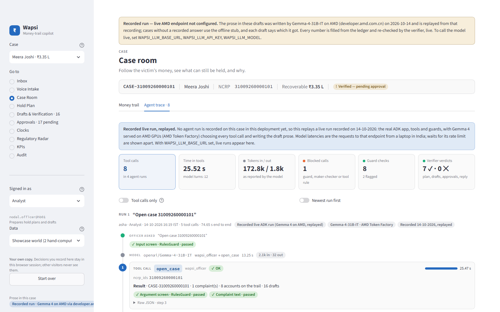
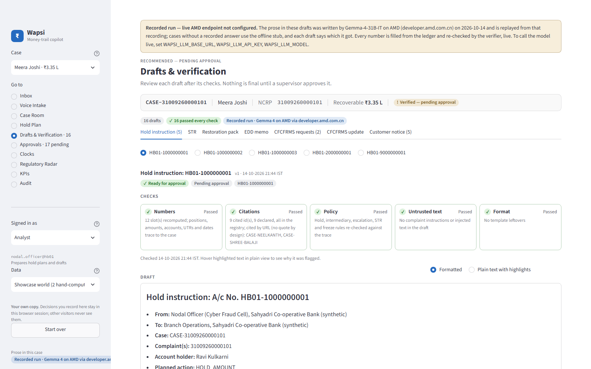

One fraud payment lands in an honest merchant's account, and the whole account is frozen. Across India, the money held mostly never comes back.
| Account on the trail | Whole-account freeze |
|---|---|
| Kirana shop · goods delivered | ₹51,200 |
| Landlord · ₹5,000 rent received | ₹1,55,000 |
| Payment-aggregator pool · settles other merchants | ₹5,00,20,000 |
| Three mule accounts | ₹1,23,800 |
99.75% of what the freeze locks belongs to people who did nothing wrong.
The bank's cyber-fraud nodal officer: traces split and layered money by hand, with an STR due within 7 working days.
The merchant who loses working capital and the customer who loses the account. The bank loses both, and answers the grievance.
Keep commerce running and keep the customer: hold the victim's money, not the business.
Follow the complaint's money through every layer of mule accounts, split per victim pro-rata (SOP 5(xiii)).
Hold min(victim money, balance) per account. Never a whole-account freeze unless an approved, recorded exception.
STR, hold instructions, customer notice, restoration packet. Gemma 4 writes the words; the verifier recomputes every number and citation.
A supervisor other than the analyst approves, bound to the draft's SHA-256 fingerprint, into a hash-chained audit log.



Mule, innocent holder, merchant, pool account. A transparent logistic scorer (default) with per-feature reasons; a GraphSAGE GNN on ROCm behind the same interface.
A hold is arithmetic, min(victim money, balance). Score ≥ 0.6 mule, ≤ 0.35 innocent, between: the officer decides.
A merchant needs a delivered invoice for every disputed credit. Pool accounts never get a forward hold.
GNN trained on an AMD Instinct MI300X, 14 Oct 2026
| Hard world, 64 cases | Heuristic | GNN · MI300X |
|---|---|---|
| Mule ROC-AUC | 0.9411 | 0.9202 |
| Dispositions right | 0.9198 | 0.9198 |
| Innocent-holder recall | 0.6875 | 0.875 |
| Holds exact · over-hold | 1.0 · ₹0 | 1.0 · ₹0 |
Validation AUC 1.0 is on a saturated synthetic world, so we report the hard world built to fool the classifier. 410,017 parameters, 0.055 s per epoch, 0.39 GB peak. Every miss is a label, never money.
Measured 14 Oct 2026 on an AMD Instinct MI300X (AMD AI Notebook, ROCm 7.14, vLLM 0.23)
Device peak while serving: 97.0 GB of 191.7 GB. Whisper and the GNN were measured on the same GPU, each in turn.
Open weights, the bank's own rack: the same code moves from AMD's hosted API to one AMD GPU by changing three settings.
Serving · AMD Instinct MI300X · 14 Oct 2026
| Concurrency | Output tok/s |
|---|---|
| 1 | 55 |
| 4 | 181 |
| 16 | 474 |
| 64 | 699 |
| 32 · real drafting prompts | 773 |
| Cases per hour (c = 16) | 1,590 |
| Drafts per GPU-hour | 12,274 |
| Cost per case at $1.99 / GPU-hour | $0.0013 ($1.25 / 1,000) |
Golden eval · 39 cases · a second MI300X (session 4) · 14 Oct 2026
| With Gemma 4 writing the prose | Result |
|---|---|
| Holds exact to the paisa | 1.0 |
| Drafts passing the verifier | 1.0 |
| Numeric accuracy | 1.0 |
| Citation validity | 1.0 |
| Injection leaks | 0 |
| Prose replaced by fixed text | 0.0332 (10 / 301) |
| p95 per case, to verified drafts | 11.1 s |
| Raw model, no slots: cases wrong | 0.4872 (19 / 39) |
Live run · AMD Token Factory (Gemma-4-31B-IT), 14 Oct 2026 · AMD-served, not an MI300X benchmark
Showcase case 1 · hand-computed
The freeze locks 352× what Wapsi holds.
Demo world · 39 cases, 10 fraud typologies
0.83% of the freeze; 0 false freezes.
Gemma 4 on one MI300X at the $1.99 per GPU-hour list price, concurrency 16.
One GPU; 12,274 drafts per GPU-hour, each verified before a human sees it.
Regulated entities on CFCFRMS. A licence per entity, on an endpoint the bank controls.
We ask for a pilot with one bank's cyber-fraud desk on an AMD endpoint it controls, and introductions to payment aggregators whose pool accounts get frozen.